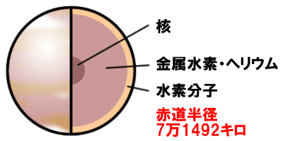
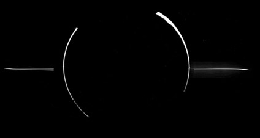
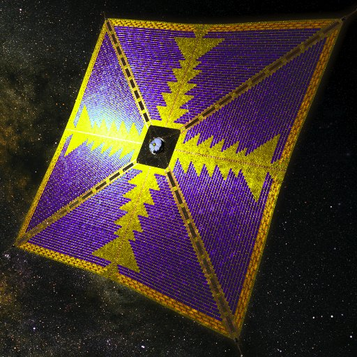

木星の特徴
太陽系の惑星の中で、一番大きな惑星。木星は太陽と同じ水素とヘリウムのガスで出来ているため、見た目より軽い。木星が今の約100倍大きければ、内部で反応がおこり、太陽のようになっていたかもしれない。木星には大赤斑がある。大赤斑とは約10時間という木星の自転スピードのはやさと大気や雲が、はげしく動いているためにできるもの。大赤斑は1830年に観測が始まってから一度も消滅したことがない。
非常に淡い環
木星にも環がある。しかし、その環は非常に淡くて細く、木星の明るさですら邪魔になって見えなくなってしまうほど。木星の環は大きさが数μmほどしかない岩石の粒子でできており、衛星イオの火山の噴出物が起源であると考えられている。
太陽系最大の磁気圏
木星は非常に強い固有磁場があり、木星の周囲には強大な磁気圏が発達している。磁気圏では、地球からも観測される強い木星電波を発生している。
地球と同様、木星でも両極にオーロラが発生する。また、衛星のイオから発生したイオンが木星の大気に衝突する箇所では発光現象が観られる。
ソーラー電力セイルで木星へ
日本では、ソーラー電力セイルという新しい技術を使った探査機で木星を目指す計画が検討されている。
ソーラー電力セイルとは、太陽の光からの電力でイオンエンジンをはたらかせて進む宇宙船と光圧を利用したソーラーセイルとを組み合わせたもの。この計画では6年かけて木星に到着し、木星を周回して外側から観測したり木星の大気へ突入して大気を観測したりする予定である。